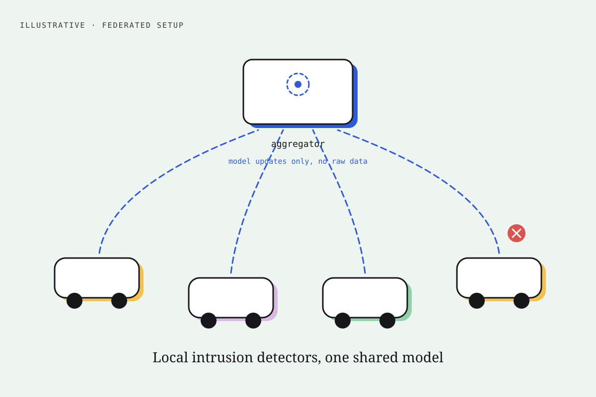

Catching hacked cars without collecting anyone’s driving data.
An AI attack detector for connected vehicles that learns across many cars, and a fix for the blind spot created when cars drive in and out of range.

A fake message can make a whole street see the wrong road.
Connected cars constantly share their position, speed and heading so they can warn each other about hazards. A hacked car, or a faulty sensor, can send false messages and give nearby cars and roadside equipment the wrong picture of the road.
AI can learn to spot those fake messages, but the usual approach collects everyone’s driving data in one place. That raises privacy and data-governance problems, because the data shows where people drive.
Let each car learn locally and share only the lesson.
With federated learning, each car trains the detector on its own messages and sends back only what it learned. A central server combines those lessons into one shared detector. Raw driving data stays in the car.
The catch: cars keep driving in and out of range of roadside units. The detector ends up learning mostly from cars that happen to stay connected, and cars on quieter roads or in weak-coverage areas barely get a say.
Three steps: measure, predict, rebalance.
- 1Measure who actually gets a say
I simulated realistic traffic and checked which cars took part in training. Of 438 eligible cars, 4 in 10 never took part at all, and at least half of those that did joined only once. Planned participation fell by more than half.
- 2Predict who will be reachable next
I built a lightweight model that predicts, 30 seconds ahead, whether a car will be in range, using only information available at that moment: its position, speed and distance to the nearest roadside unit. It ranks reachable cars well (0.89 on a 0-to-1 scale), and I checked that its probabilities are trustworthy enough to use, not just its rankings.
- 3Give rarely seen cars a fairer, capped say
When a car that is usually out of range does contribute, its lesson counts for a bit more. The boost is capped so that no single car can dominate the shared detector.
What the tests showed.
The rebalancing helped a little, but it cannot help cars that never take part at all. The detector finds attacks but raises too many false alarms, so this is promising research, not something to put on the road.
Honest limits.
- Everything ran on simulated traffic: one city grid and one highway, with four roadside units. Real roads, radio conditions and traffic may behave differently.
- The detector says “attack” or “normal”; it does not yet tell attack types apart.
- Upload traffic fell by about half under realistic mobility, but that came from fewer cars being in range, not from my method, and the paper says so.
- Next: cut false alarms with better alert thresholds, test on more road layouts, and test against attacks aimed at the learning process itself.
Under the hood.
- Method: Bias-Corrected Mobility-Aware Federated Aggregation (BCMFA), a bounded inverse-availability weighting (probability floor 0.20, maximum factor 5), compared with FedAvg, FedProx, FedNova and FedBuff.
- Data: VeReMi NextGen messages (38 engineered features, official splits) with SUMO urban-grid and highway mobility traces; 30 federated rounds.
- Availability predictor: isotonic-calibrated random forest on 19 mobility and coverage features, chronological 60/20/20 split with a 30-second purge gap; test ROC AUC 0.8922, Brier score 0.1345.
- Detector (frozen test, 199,663 samples): malicious recall 92.33%, ROC AUC 0.7934, PR AUC 0.9390, false-positive rate 79.89%. Checkpoint chosen on validation data only; the test set was used once.
I can find a hidden bias in how an AI system learns, design a careful fix, test it honestly, and report the result that says “not ready yet”.